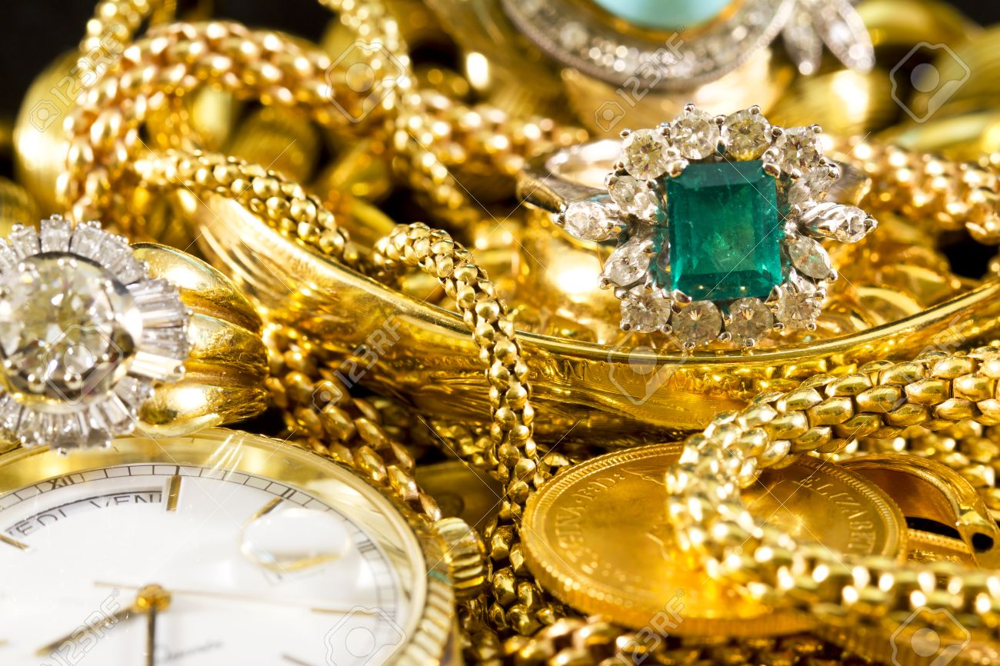

Gemas

Collares

Una gema, también llamada piedra preciosa, es una roca, mineral, vidrio o producto orgánico de origen natural, que al ser cortado o pulido se puede usar en la confección de joyas u objetos artísticos. Las piedras peruanas más demandadas en el mundo son la crisocola (conocida también como "turquesa peruana") y los ópalos andino (azul) y rosado, según el GIA, Bedón y Carlos Ballinas, un empresario peruano de artesanías de piedras preciosas, que vive hace tres décadas en Orleans, Francia. En el Perú no existen piedras preciosas, solo semipreciosas.